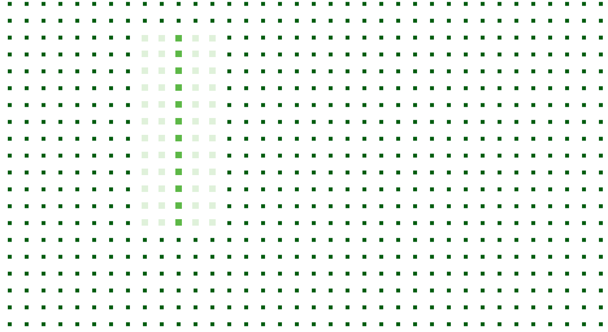
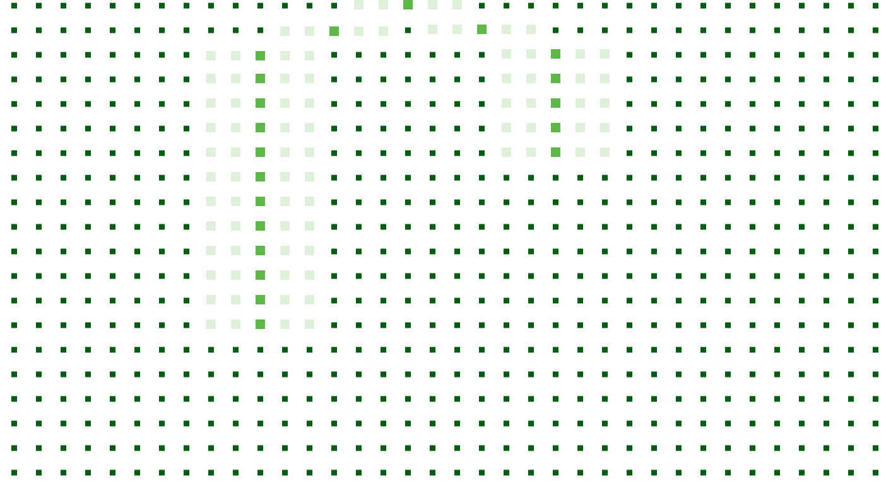
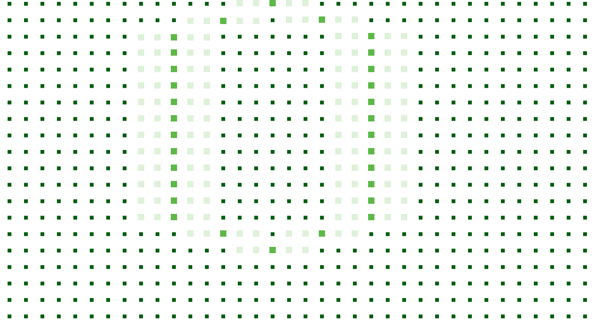
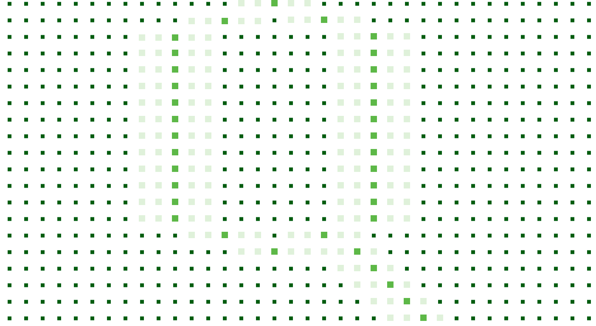

Frame the question
Define the decision, the operating context and what the intelligence must make possible.
 START A CONVERSATION
START A CONVERSATION
Qoridian connects evidence across place, infrastructure, policy, markets and time to reveal how conditions interact and what those relationships mean for a decision.
Every consequential decision sits inside a wider system of physical, economic, institutional and human conditions. Viewed separately, each source reveals only part of the picture. Qoridian brings the relevant evidence into relation—so the system can be understood as a whole.
Qoridian™ is the proprietary intelligence capability behind our work. It connects and interrogates data and evidence across multiple layers, adapting to the question rather than forcing every decision through a fixed model. It begins with what needs to be understood.

Define the decision, the operating context and what the intelligence must make possible.

Bring the relevant data, conditions and signals into relation across the system.

Surface the relationships, dependencies and conditions that matter to the decision.

Translate connected intelligence into insight that can inform what happens next.
See where resources, demand, infrastructure, access and enabling conditions align.
Examine whether an idea, asset or opportunity is supported by the system around it.
Identify the dependencies, constraints and emerging risks that could alter an intended outcome.

Understand how different choices, assumptions and conditions could shape what follows.
Distinguish what is material, where attention is required and what should happen first.
The capability can be configured around a place, resource, network, market, investment or national priority. The application changes. The principle remains the same: connect the conditions, read the relationships and build a clearer basis for action.


Qoridian Sector Briefs examine the infrastructure, institutions, markets and investment conditions shaping critical sectors—and the relationships decision-makers need to understand.

Production, infrastructure, market access and investment across the wider food system.
Generation, transmission, distribution and investment across the wider energy system.

Broadband infrastructure, digital access and investment across the wider connectivity ecosystem.

Resources, infrastructure, allocation and climate resilience across water systems and river basins.

Infrastructure, workforce, service delivery and investment across the wider health system.

Geological potential, infrastructure, value chains and investment across the minerals sector.

Understand National Systems, Direct Priorities And Strengthen The Basis For Policy, Investment And Delivery.
Evaluate Opportunity In Context, Test Assumptions And Identify Where Conditions Support Investment.
Read Markets And Operating Environments More Clearly And Anticipate The Forces That Could Affect Growth, Resilience And Long-Term Performance.
Bring us the question. Qoridian will bring the relevant context into relation.
START A CONVERSATION